Our founder is the world’s no. 2 at mental maths. He’ll have your ROI before you finish the sentence, and lose his phone twice before lunch.
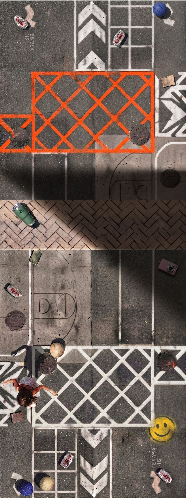
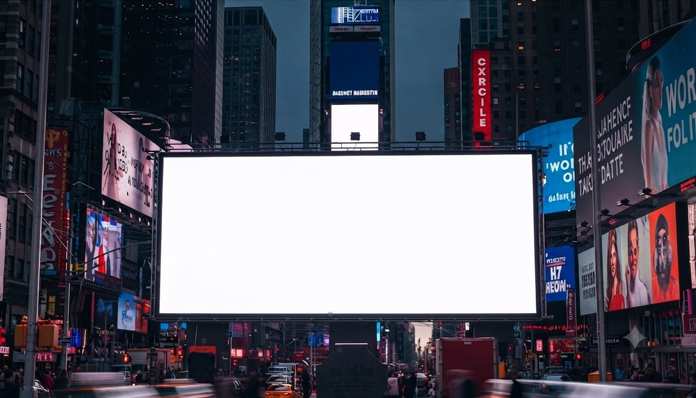
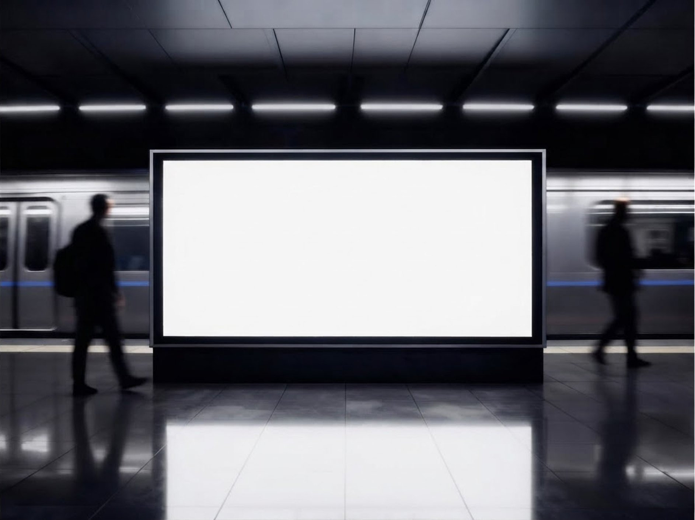
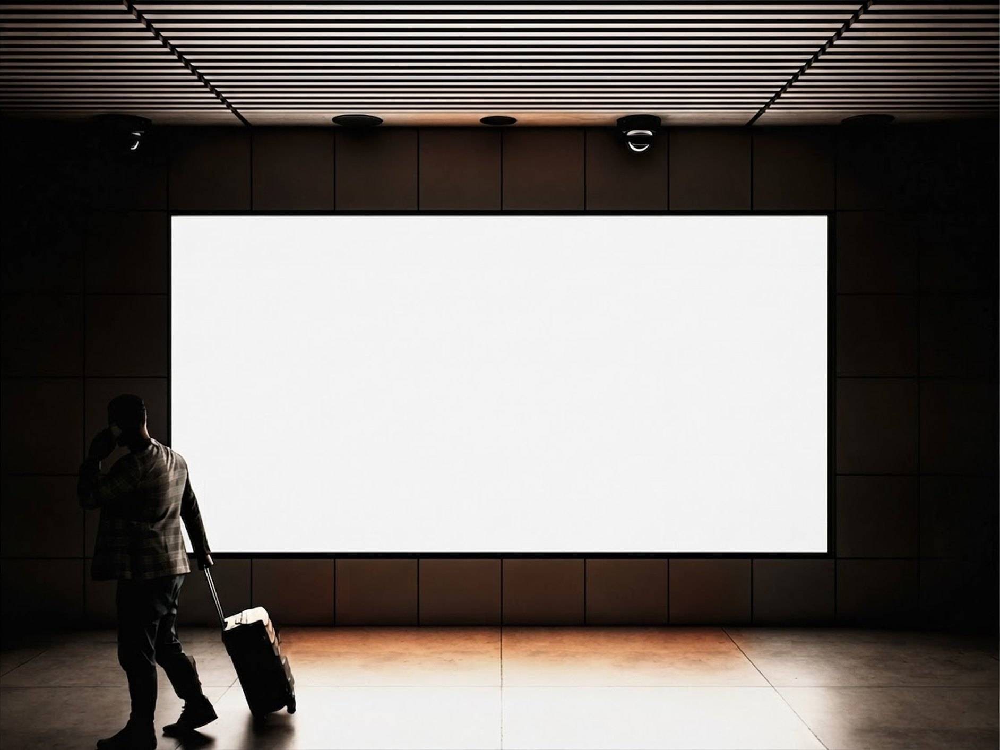
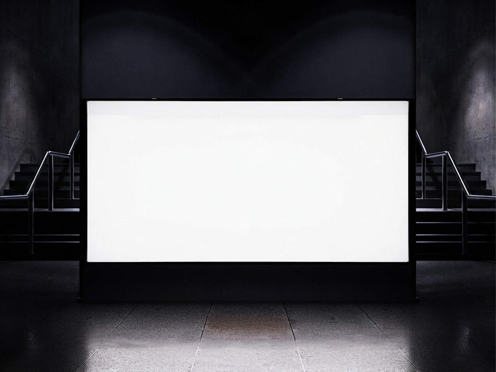
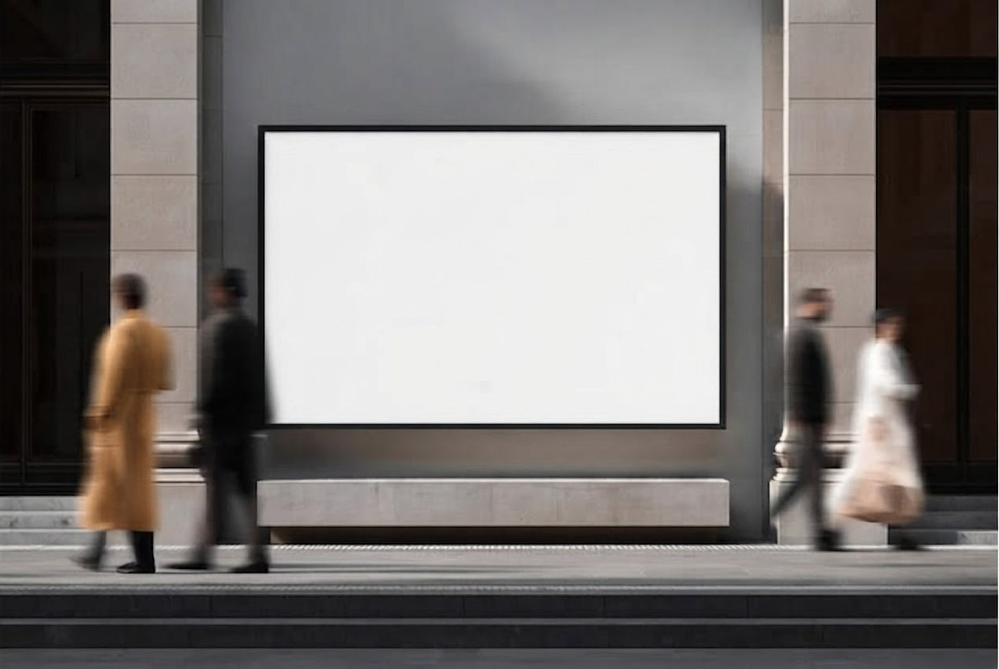
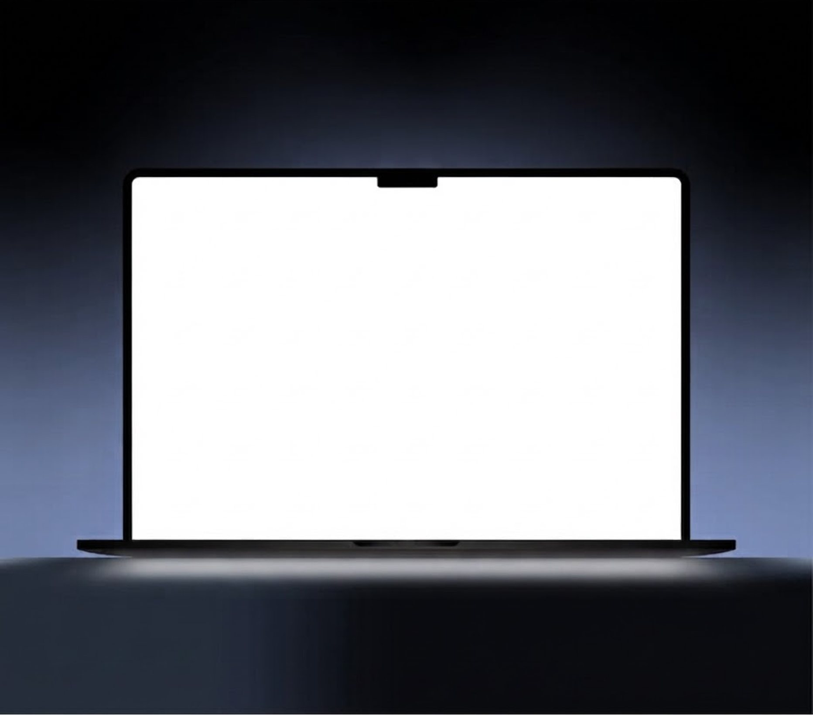
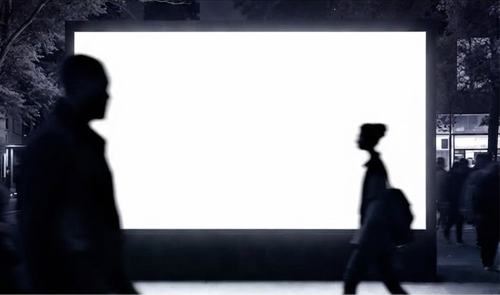
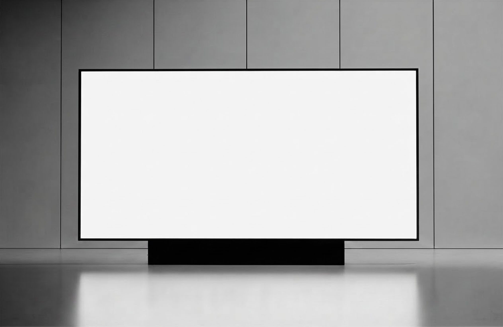
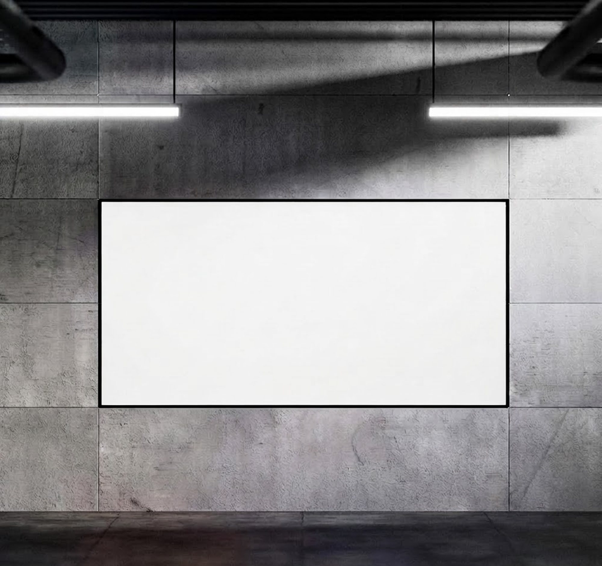
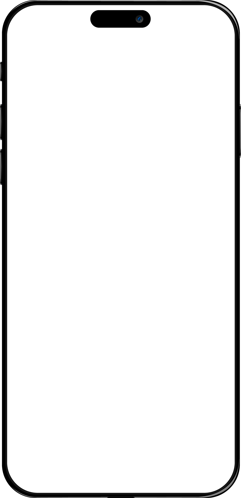
our story
Billboards, cinema, TV, the desktop web — all built for a world that looked sideways. Then everyone turned the screen and never turned it back.
We only build for where they’re actually looking.

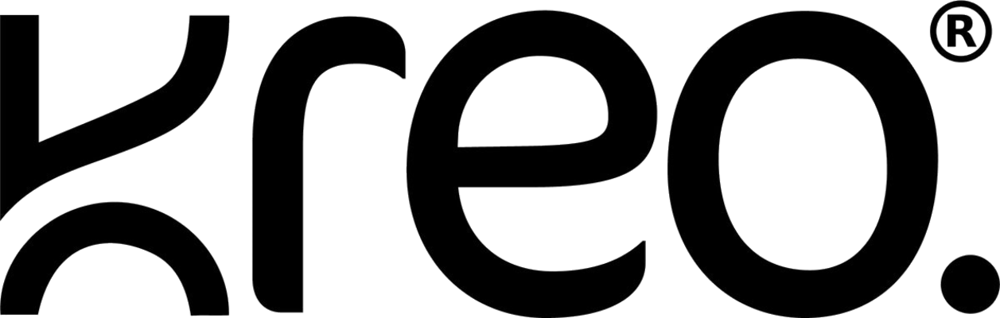
monthly overview
190.1M+12.4%
total views
33.5M+11.0%
engagement
5.3M+11.0%
followers and subscribers
165.4M+11.5%
network access
Jan 1, 2026 – Jul 26, 2026
total views
1054.2M+12.4%
creative marketing naturals
Short-form built to earn the watch, not dodge the skip. Check out a few.
the group chat
None of this will help you decide. All of it is true.
Our founder is the world’s no. 2 at mental maths. He’ll have your ROI before you finish the sentence, and lose his phone twice before lunch.
We own exactly one office plant. It is plastic. It is thriving.
what we’re wildin with
the founder
Arsalan built an audience’s trust from zero, so he knows what it costs to protect it.
8 yrs
in social growth
7B+
lifetime views
4M+
followers of his own
work with us
One email, one reply. If we’re right for it we’ll say so — and if we’re not, we’ll say that too.
get in touchTell us what you’re building. If it’s a fit, you’ll hear from us quickly.
Mon–Sat, 11–7 on paper. The scroll doesn’t clock off, so mostly neither do we.
Mumbai, India
scroll ↓